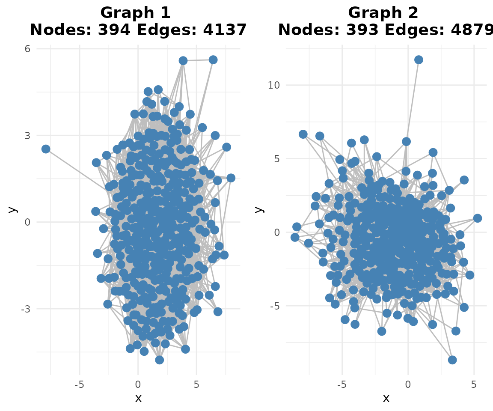
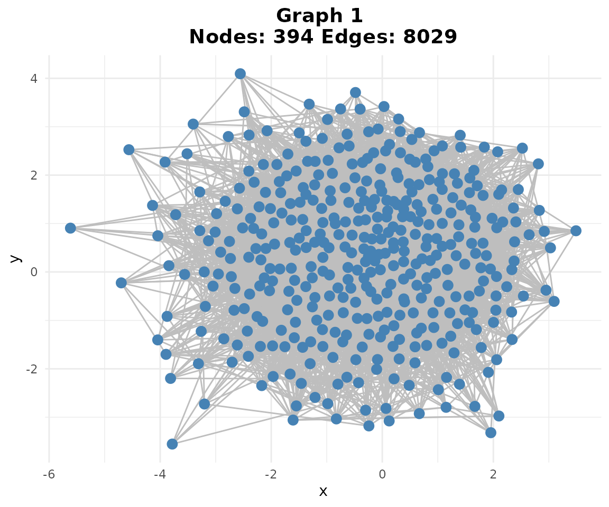

scGraphVerse Case Study: B-cell GRN Reconstruction
Francesco Cecere
Source:vignettes/case_study.Rmd
case_study.RmdIntroduction
This vignette demonstrates the scGraphVerse workflow on a single-cell RNA-seq dataset. We show how to:
- Load and preprocess public PBMC data.
- Infer gene regulatory networks withGENIE3.
- Build consensus networks and detect communities.
- Validate inferred edges using STRINGdb.
1. Dataset and Preprocessing
We use two public PBMC SCE objects containing PBMC samples. Our goal is to focus on healthy B cells and a common gene set.
# 1. Load PBMC data
pbmc_obj <- TENxPBMCData("pbmc3k")
#> see ?TENxPBMCData and browseVignettes('TENxPBMCData') for documentation
#> loading from cache
pbmc_obj1 <- TENxPBMCData("pbmc4k")
#> see ?TENxPBMCData and browseVignettes('TENxPBMCData') for documentation
#> loading from cache
sce <- logNormCounts(pbmc_obj)
symbols_tenx <- rowData(sce)$Symbol_TENx
valid <- !is.na(symbols_tenx) & symbols_tenx != ""
sce <- sce[valid, ]
rownames(sce) <- make.unique(symbols_tenx[valid])
logcounts(sce) <- as.matrix(logcounts(sce))
colnames(sce) <- paste0("cell_", seq_len(ncol(sce)))
sce1 <- logNormCounts(pbmc_obj1)
symbols_tenx1 <- rowData(sce1)$Symbol_TENx
valid1 <- !is.na(symbols_tenx1) & symbols_tenx1 != ""
sce1 <- sce1[valid1, ]
rownames(sce1) <- make.unique(symbols_tenx1[valid1])
logcounts(sce1) <- as.matrix(logcounts(sce1))
colnames(sce1) <- paste0("cell_", seq_len(ncol(sce1)))
ref <- celldex::HumanPrimaryCellAtlasData()
pred1 <- SingleR(test = sce1, ref = ref, labels = ref$label.main)
colData(sce1)$predicted_celltype <- pred1$labels
pred <- SingleR(test = sce, ref = ref, labels = ref$label.main)
colData(sce)$predicted_celltype <- pred$labels
# 2. Select top 500 B-cell genes
genes <- selgene(
object = sce,
top_n = 500,
cell_type = "B_cell",
cell_type_col = "predicted_celltype",
remove_rib = TRUE,
remove_mt = TRUE
)
#> Using SCE assay 'logcounts' (log-normalized).
#> Subsetted to 344 cells where predicted_celltype = 'B_cell'.
#> Removed mitochondrial genes matching '^MT-'.
#> Removed ribosomal genes matching '^RP[SL]'.
#> Top 500 genes selected based on mean expression.
# 2. Select top 500 B-cell genes
genes1 <- selgene(
object = sce1,
top_n = 500,
cell_type = "B_cell",
cell_type_col = "predicted_celltype",
remove_rib = TRUE,
remove_mt = TRUE
)
#> Using SCE assay 'logcounts' (log-normalized).
#> Subsetted to 607 cells where predicted_celltype = 'B_cell'.
#> Removed mitochondrial genes matching '^MT-'.
#> Removed ribosomal genes matching '^RP[SL]'.
#> Top 500 genes selected based on mean expression.
commong <- intersect(genes, genes1)
pbmc1_sub <- subset(sce, features = commong)
pbmc2_sub <- subset(sce1, features = commong)
pbmc1_sub <- pbmc1_sub[commong, ]
pbmc2_sub <- pbmc2_sub[commong, ]
pbmc1_sub <- pbmc1_sub[, colData(pbmc1_sub)$predicted_celltype == "B_cell"]
pbmc2_sub <- pbmc2_sub[, colData(pbmc2_sub)$predicted_celltype == "B_cell"]
# List for multi-sample analysis
bcell_list <- list(pbmc1_sub, pbmc2_sub)
shuffle_matrix_rows <- function(mat) {
# Convert DelayedArray to matrix if needed
if (is(mat, "DelayedArray")) {
mat <- as.matrix(mat)
}
shuffled <- t(apply(mat, 1, sample))
rownames(shuffled) <- rownames(mat)
colnames(shuffled) <- colnames(mat)
return(shuffled)
}
check <- shuffle_matrix_rows(assay(bcell_list[[1]], "counts")[1:5, 1:5])2. Network Inference
We infer GRNs using three algorithms. Replace method to
switch.
# Choose method: "GENIE3", "GRNBoost2", or "JRF"
method <- "GENIE3"
networks <- infer_networks(
count_matrices_list = bcell_list,
method = method,
nCores = 1
)2.1. Building Adjacency Matrices
Convert edge lists to weighted matrices, symmetrize, and apply threshold.
# Weighted adjacency
wadj <- generate_adjacency(networks)
# Symmetrize
swadj <- symmetrize(wadj, weight_function = "mean")
# Binary cutoff (top 5%)
binary_adj <- cutoff_adjacency(
count_matrices = bcell_list,
weighted_adjm_list = swadj,
n = 2,
method = method,
quantile_threshold = 0.95,
nCores = 1
)
# Plot
plotg(binary_adj)
3. Consensus and Community Detection
Aggregate multiple binary networks into a consensus and find network modules.
# Consensus by vote
consensus <- create_consensus(binary_adj, method = "vote")
plotg(list(consensus))
# Note: This requires internet connection for STRINGdb
# To run this section, set eval=TRUE and ensure internet connectivity
compare_consensus(consensus_matrix = consensus, false_plot = TRUE)
# Community detection
communities <- community_path(consensus)4. Validation with STRINGdb
Fetch high-confidence interactions from STRING and evaluate true positives.
# Note: This requires internet connection for STRINGdb downloads
# To run this section, set eval=TRUE and ensure internet connectivity
str <- stringdb_adjacency(
genes = rownames(consensus),
species = 9606,
required_score = 900,
keep_all_genes = TRUE
)$binary
ground_truth <- symmetrize(list(str), weight_function = "mean")[[1]]
# Edge mining: TP rates
em <- edge_mining(list(consensus),
query_edge_types = "TP",
ground_truth = ground_truth
)5. Conclusion
This case study illustrates how scGraphVerse enables end-to-end GRN reconstruction and validation in single-cell data. Users can swap inference algorithms, tune thresholds, and incorporate external prior networks.
Session Information
sessionInfo()
#> R version 4.4.2 (2024-10-31)
#> Platform: x86_64-pc-linux-gnu
#> Running under: Ubuntu 20.04.2 LTS
#>
#> Matrix products: default
#> BLAS: /usr/lib/x86_64-linux-gnu/blas/libblas.so.3.9.0
#> LAPACK: /usr/lib/x86_64-linux-gnu/lapack/liblapack.so.3.9.0
#>
#> locale:
#> [1] LC_CTYPE=en_US.UTF-8 LC_NUMERIC=C
#> [3] LC_TIME=it_IT.UTF-8 LC_COLLATE=en_US.UTF-8
#> [5] LC_MONETARY=it_IT.UTF-8 LC_MESSAGES=en_US.UTF-8
#> [7] LC_PAPER=it_IT.UTF-8 LC_NAME=C
#> [9] LC_ADDRESS=C LC_TELEPHONE=C
#> [11] LC_MEASUREMENT=it_IT.UTF-8 LC_IDENTIFICATION=C
#>
#> time zone: Europe/Rome
#> tzcode source: system (glibc)
#>
#> attached base packages:
#> [1] stats4 stats graphics grDevices utils datasets methods
#> [8] base
#>
#> other attached packages:
#> [1] celldex_1.16.0 SingleR_2.8.0
#> [3] org.Hs.eg.db_3.20.0 AnnotationDbi_1.68.0
#> [5] scater_1.34.1 scuttle_1.16.0
#> [7] TENxPBMCData_1.24.0 HDF5Array_1.34.0
#> [9] rhdf5_2.50.2 DelayedArray_0.32.0
#> [11] SparseArray_1.6.2 S4Arrays_1.6.0
#> [13] abind_1.4-8 Matrix_1.7-3
#> [15] SingleCellExperiment_1.28.1 SummarizedExperiment_1.36.0
#> [17] Biobase_2.66.0 GenomicRanges_1.58.0
#> [19] GenomeInfoDb_1.42.3 IRanges_2.40.1
#> [21] S4Vectors_0.44.0 BiocGenerics_0.52.0
#> [23] MatrixGenerics_1.18.1 matrixStats_1.5.0
#> [25] lubridate_1.9.4 forcats_1.0.0
#> [27] stringr_1.5.1 dplyr_1.1.4
#> [29] purrr_1.1.0 readr_2.1.5
#> [31] tidyr_1.3.1 tibble_3.3.0
#> [33] ggplot2_3.5.2 tidyverse_2.0.0
#> [35] Seurat_5.3.0 SeuratObject_5.1.0
#> [37] sp_2.2-0 scGraphVerse_0.99.0
#> [39] BiocStyle_2.34.0
#>
#> loaded via a namespace (and not attached):
#> [1] igraph_2.1.4 graph_1.84.1
#> [3] hash_2.2.6.3 ica_1.0-3
#> [5] plotly_4.11.0 Formula_1.2-6
#> [7] zlibbioc_1.52.0 tidyselect_1.2.1
#> [9] bit_4.6.0 doParallel_1.0.17
#> [11] lattice_0.20-44 blob_1.2.4
#> [13] parallel_4.4.2 hdrcde_3.4
#> [15] png_0.1-8 plotrix_3.8-4
#> [17] cli_3.6.5 ggplotify_0.1.2
#> [19] askpass_1.2.1 goftest_1.2-3
#> [21] pkgdown_2.1.3 textshaping_1.0.1
#> [23] BiocNeighbors_2.0.1 fdatest_2.1.1
#> [25] uwot_0.2.3 curl_6.4.0
#> [27] deSolve_1.40 mime_0.13
#> [29] evaluate_1.0.4 tidytree_0.4.6
#> [31] gsubfn_0.7 stringi_1.8.7
#> [33] pROC_1.18.5 backports_1.5.0
#> [35] desc_1.4.3 multinet_4.2.2
#> [37] XML_3.99-0.18 Exact_3.3
#> [39] httpuv_1.6.16 magrittr_2.0.3
#> [41] clusterProfiler_4.14.6 rappdirs_0.3.3
#> [43] splines_4.4.2 mclust_6.1.1
#> [45] rainbow_3.8 ggraph_2.2.1
#> [47] pcaPP_2.0-5 rentrez_1.2.4
#> [49] networkD3_0.4.1 ggbeeswarm_0.7.2
#> [51] sctransform_0.4.2 rootSolve_1.8.2.4
#> [53] DBI_1.2.3 jquerylib_0.1.4
#> [55] reactome.db_1.89.0 withr_3.0.2
#> [57] class_7.3-19 systemfonts_1.2.3
#> [59] enrichplot_1.26.6 lmtest_0.9-40
#> [61] tidygraph_1.3.1 BiocManager_1.30.26
#> [63] htmlwidgets_1.6.4 fs_1.6.6
#> [65] ggrepel_0.9.6 labeling_0.4.3
#> [67] cellranger_1.1.0 lmom_3.2
#> [69] reticulate_1.43.0 robin_2.1.0
#> [71] zoo_1.8-14 XVector_0.46.0
#> [73] knitr_1.50 UCSC.utils_1.2.0
#> [75] timechange_0.3.0 foreach_1.5.2
#> [77] fda_6.3.0 patchwork_1.3.1
#> [79] caTools_1.18.3 grid_4.4.2
#> [81] data.table_1.17.8 ggtree_3.14.0
#> [83] R.oo_1.27.1 RSpectra_0.16-2
#> [85] irlba_2.3.5.1 alabaster.schemas_1.6.0
#> [87] fastDummies_1.7.5 gridGraphics_0.5-1
#> [89] DescTools_0.99.60 lazyeval_0.2.2
#> [91] yaml_2.3.10 survival_3.2-11
#> [93] scattermore_1.2 BiocVersion_3.20.0
#> [95] crayon_1.5.3 RcppAnnoy_0.0.22
#> [97] RColorBrewer_1.1-3 progressr_0.15.1
#> [99] tweenr_2.0.3 later_1.4.2
#> [101] ggridges_0.5.6 fds_1.8
#> [103] codetools_0.2-18 KEGGREST_1.46.0
#> [105] Rtsne_0.17 shape_1.4.6.1
#> [107] ReactomePA_1.50.0 filelock_1.0.3
#> [109] INetTool_0.1.1 data.tree_1.1.0
#> [111] sqldf_0.4-11 pkgconfig_2.0.3
#> [113] spatstat.univar_3.1-4 ggpubr_0.6.1
#> [115] aplot_0.2.8 alabaster.base_1.6.1
#> [117] spatstat.sparse_3.1-0 ape_5.8-1
#> [119] viridisLite_0.4.2 xtable_1.8-4
#> [121] car_3.1-3 plyr_1.8.9
#> [123] httr_1.4.7 tools_4.4.2
#> [125] globals_0.18.0 beeswarm_0.4.0
#> [127] broom_1.0.8 nlme_3.1-152
#> [129] dbplyr_2.5.0 ExperimentHub_2.14.0
#> [131] r2r_0.1.2 digest_0.6.37
#> [133] qpdf_1.4.1 bookdown_0.43
#> [135] farver_2.1.2 tzdb_0.5.0
#> [137] reshape2_1.4.4 ks_1.15.1
#> [139] yulab.utils_0.2.0 viridis_0.6.5
#> [141] glue_1.8.0 cachem_1.1.0
#> [143] BiocFileCache_2.14.0 polyclip_1.10-7
#> [145] generics_0.1.4 Biostrings_2.74.1
#> [147] mvtnorm_1.3-3 proto_1.0.0
#> [149] parallelly_1.45.1 RcppHNSW_0.6.0
#> [151] ragg_1.4.0 ScaledMatrix_1.14.0
#> [153] carData_3.0-5 pbapply_1.7-4
#> [155] httr2_1.1.2 glmnet_4.1-10
#> [157] spam_2.11-1 gson_0.1.0
#> [159] STRINGdb_2.18.0 graphlayouts_1.2.2
#> [161] gtools_3.9.5 readxl_1.4.5
#> [163] alabaster.se_1.6.0 ggsignif_0.6.4
#> [165] gridExtra_2.3 shiny_1.11.1
#> [167] GenomeInfoDbData_1.2.13 R.utils_2.13.0
#> [169] rhdf5filters_1.18.1 RCurl_1.98-1.17
#> [171] memoise_2.0.1 rmarkdown_2.29
#> [173] fmsb_0.7.6 scales_1.4.0
#> [175] R.methodsS3_1.8.2 gld_2.6.7
#> [177] gypsum_1.2.0 future_1.58.0
#> [179] RANN_2.6.2 spatstat.data_3.1-6
#> [181] rstudioapi_0.17.1 cluster_2.1.2
#> [183] perturbR_0.1.3 spatstat.utils_3.1-5
#> [185] hms_1.1.3 fitdistrplus_1.2-4
#> [187] cowplot_1.2.0 colorspace_2.1-1
#> [189] rlang_1.1.6 GENIE3_1.28.0
#> [191] sparseMatrixStats_1.18.0 DelayedMatrixStats_1.28.1
#> [193] dotCall64_1.2 ggforce_0.5.0
#> [195] ggtangle_0.0.7 xfun_0.52
#> [197] alabaster.matrix_1.6.1 e1071_1.7-16
#> [199] iterators_1.0.14 randomForest_4.7-1.2
#> [201] GOSemSim_2.32.0 treeio_1.30.0
#> [203] Rhdf5lib_1.28.0 bitops_1.0-9
#> [205] promises_1.3.3 RSQLite_2.4.2
#> [207] qvalue_2.38.0 fgsea_1.32.4
#> [209] proxy_0.4-27 GO.db_3.20.0
#> [211] compiler_4.4.2 alabaster.ranges_1.6.0
#> [213] distributions3_0.2.2 boot_1.3-28
#> [215] beachmat_2.22.0 graphite_1.52.0
#> [217] listenv_0.9.1 Rcpp_1.1.0
#> [219] AnnotationHub_3.14.0 BiocSingular_1.22.0
#> [221] tensor_1.5.1 MASS_7.3-65
#> [223] BiocParallel_1.40.2 spatstat.random_3.4-1
#> [225] R6_2.6.1 fastmap_1.2.0
#> [227] fastmatch_1.1-6 rstatix_0.7.2
#> [229] vipor_0.4.7 ROCR_1.0-11
#> [231] rsvd_1.0.5 gtable_0.3.6
#> [233] KernSmooth_2.23-20 miniUI_0.1.2
#> [235] deldir_2.0-4 htmltools_0.5.8.1
#> [237] bit64_4.6.0-1 spatstat.explore_3.5-2
#> [239] lifecycle_1.0.4 sass_0.4.10
#> [241] vctrs_0.6.5 spatstat.geom_3.5-0
#> [243] DOSE_4.0.1 haven_2.5.5
#> [245] ggfun_0.2.0 future.apply_1.20.0
#> [247] pracma_2.4.4 bslib_0.9.0
#> [249] pillar_1.11.0 gplots_3.2.0
#> [251] jsonlite_2.0.0 expm_1.0-0
#> [253] chron_2.3-62